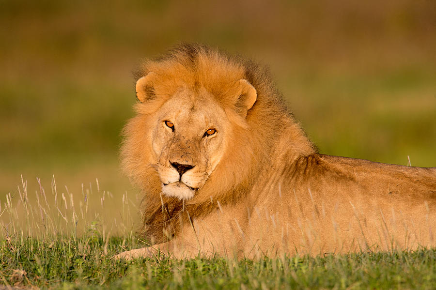
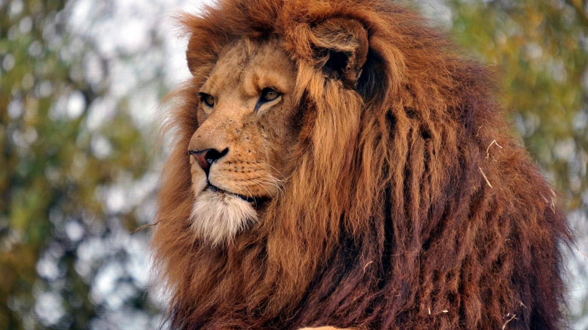
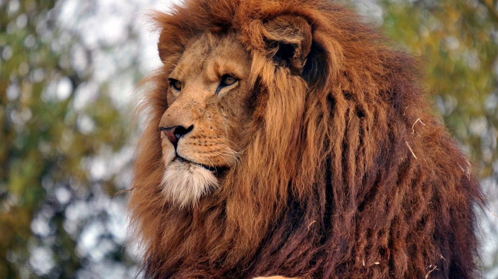
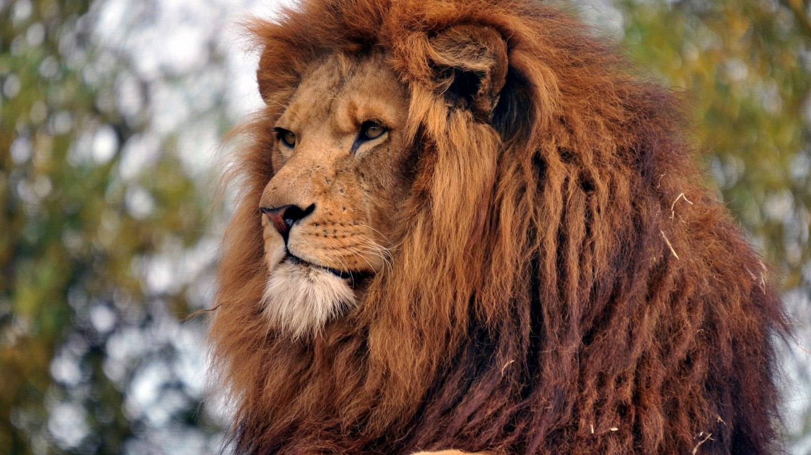

León (Panthera leo)
El león (Panthera leo) es un gran felino originario de África Subsahariana y ciertas regiones de la India. Es conocido por su melena distintiva, que solo los machos poseen. Los leones son carnívoros y son conocidos por su habilidad para cazar en grupo. A pesar de ser uno de los animales más reconocibles y admirados del mundo, las poblaciones de leones han disminuido en las últimas décadas debido a la pérdida de hábitat y conflictos con los humanos.

HÁBITAT Y ESTILO DE VIDA
- El león (Panthera leo) es originario del África Subsahariana y de ciertas regiones de la India. Habita en los bosques abiertos, las sabanas, los matorrales y las llanuras herbáceas. A menudo vive en zonas extremadamente secas y calurosas durante la mayor parte del año
- Los leones son animales sociables y suelen vivir en manadas. Dentro de la manada, cada miembro cumple una asignación importante, como cazadores, cuidadores, protectores o exploradores del entorno. Los machos jóvenes son obligados a abandonar el grupo para formar su propio rebaño cuando poseen la edad para emparejarse
- Los leones son carnívoros y frecuentemente cazan en grupos, siendo capaces de crear estrategias para rodear a sus presas. Dedican unas 20 horas diarias al descanso y la inactividad, teniendo en cambio sus períodos de socialización al ocaso y sus horas de cacería, por lo general, durante la noche
- A pesar de ser potentes depredadores, los leones se hallan entre las especies vulnerables y susceptibles de extinción. En las últimas décadas sus poblaciones sufrieron un declive de entre un 30 y 50%, haciendo que su vida no sea viable por fuera de las reservas ecológicas delimitadas. La pérdida de su hábitat y los conflictos con las poblaciones humanas son en parte causantes de este fenómeno
5 caracteristicas sobre el León (Panthera leo)
- Melena distintiva: Los leones machos son famosos por su melena, que es una característica única de esta especie. La melena puede variar en color desde rubio, marrón, rojo, e incluso negro, y su presencia sirve para atraer a las hembras y para intimidar a otros machos.
- Caza en grupo: A diferencia de otros felinos que suelen ser solitarios, los leones viven en manadas y cazan en grupo. Esto les permite cazar presas más grandes y defender su territorio de manera más efectiva.
- Comunicación rugiente: Los leones tienen un rugido fuerte y distintivo que puede ser escuchado hasta a 8 km de distancia. Utilizan este rugido para comunicarse con otros miembros de la manada y para marcar su territorio.
- Hábitat diverso: Aunque los leones son a menudo asociados con la sabana africana, pueden vivir en una variedad de hábitats, incluyendo bosques, matorrales, y áreas semi-desérticas.
- Reproducción: Las leonas son las que se encargan de cuidar a las crías. Un león bebé, o cachorro, nace después de un período de gestación de alrededor de 110 días. Los cachorros son cuidados y alimentados por todas las hembras de la manada.
Galeria

 

